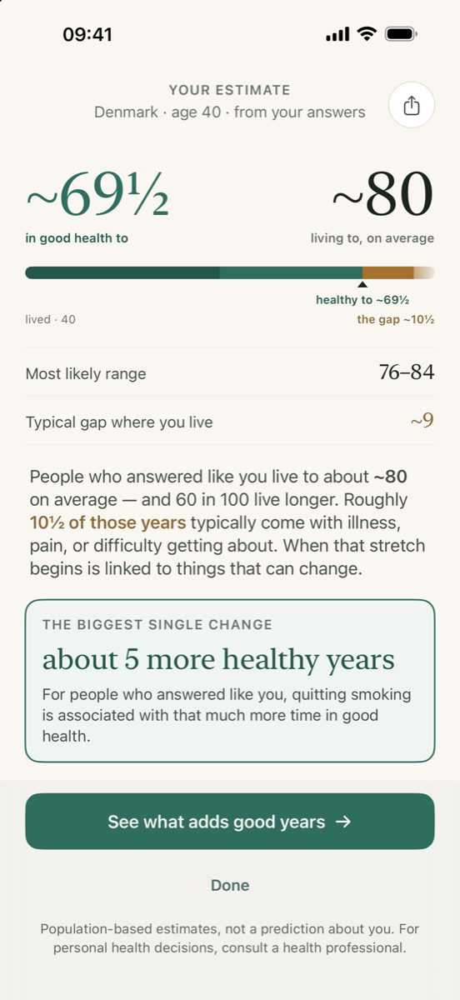
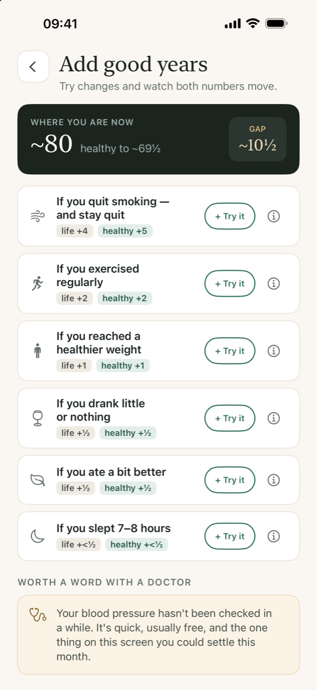

Two questions, answered together: how long people who answer the way you do tend to live, and how many of those years they typically spend in good health. The distance between them runs to about a decade across whole populations, and almost nobody knows roughly where their own sits.


Get Good Years on the App Store
Free. One optional purchase, no subscription. iPhone.
Ten questions, about three minutes, on an iPhone. Then two figures side by side, and a list of changes — each one priced in healthy years rather than in good intentions.
No account, no sign-in, no analytics, no advertising, no third-party code, and no network requests at all — it works in aeroplane mode. Deleting the app deletes everything there is, and there is a button in Settings if you would rather not wait.
Every figure it uses has its source and its verification status on one page: how the numbers are made. That page also says what the model cannot know, and what has been corrected since.
Good Years is an educational wellness app. The estimates it shows are based on WHO population statistics and published long-term cohort studies — they describe averages across large groups of people and are shown as ranges, never as a prediction about any individual. Good Years does not provide medical advice, diagnosis, or treatment, and is not a substitute for consulting a health professional. Everything runs on your device: no account, no data collection, ever.